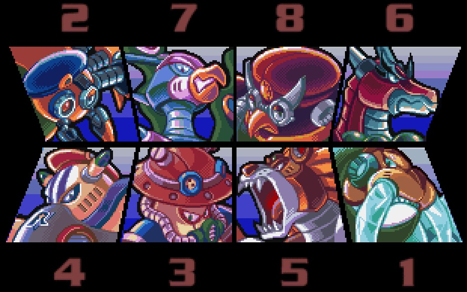
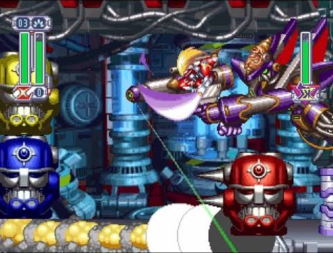
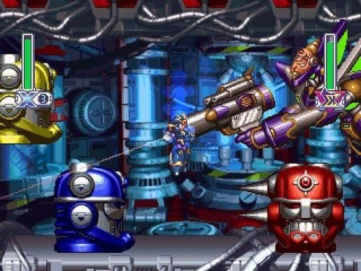
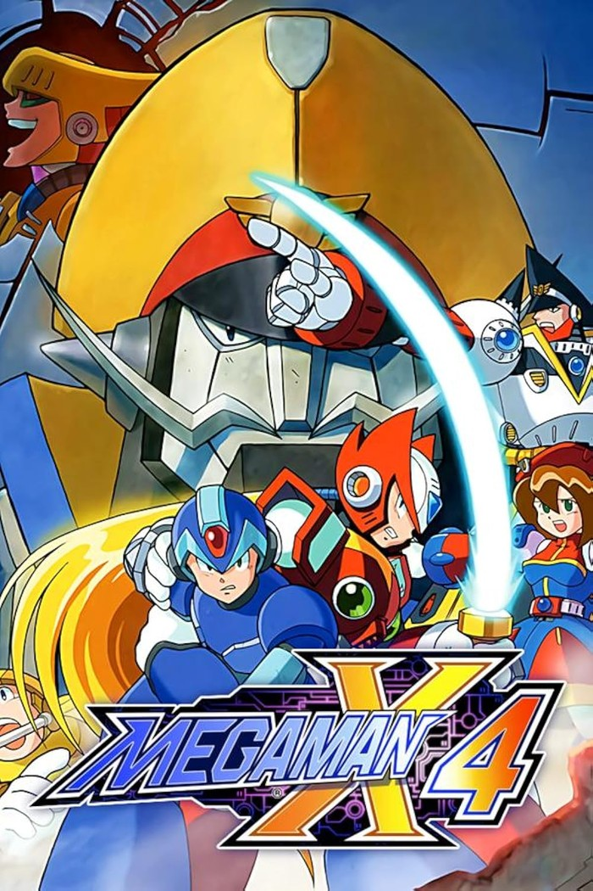

Ngồi xuống một cái máy bất kỳ trong quán, tớ bật máy lên, ngó quanh coi đứa nào đã tới. Giờ đó là chiều tan học, chưa đủ người thì chưa ghép được trận CS, mà ngồi không cũng chán — nên việc đầu tiên sau khi ngồi vào máy, gần như là phản xạ, là mở đại Mega Man X4 lên chơi cho đỡ sốt ruột. Máy nào trong quán cũng có sẵn nó, cài từ đời nào chẳng ai nhớ, như một phần mềm mặc định đi kèm máy tính vậy.
Lớp 5, tớ chưa biết ADSL là cái gì — mà thật ra hồi đó có biết cũng chẳng nhà nào lắp nổi, đó là thứ xa xỉ với đám con nít tụi tớ. Ra quán net là để chơi LAN: Counter-Strike, Warcraft 3, có bao nhiêu máy góp bấy nhiêu người. Nhưng cái khoảng chờ giữa lúc ngồi xuống và lúc đủ người vào trận, Mega Man X4 luôn là thứ lấp vào vừa khít, không sớm không muộn.
Nhưng trước khi kịp thuộc lòng thứ gì, thứ đầu tiên hạ gục cả đám luôn là cái mã ngoài. Bật máy lên, đoạn hoạt hình mở đầu chạy lên với tạo hình vẽ tay kiểu anime hẳn hoi, chứ không phải mấy khối pixel vuông vức quen thuộc trên đám game DOS xám xịt ở quán. Nhạc nền thì rộn ràng, có tiết tấu rock điện tử nghe "đã tai" hơn hẳn tiếng bíp bíp 8-bit tụi tớ quen nghe. Tạo hình X mặc bộ giáp xanh dương ánh kim trông ngầu không thể tả, còn Zero với mái tóc dài đỏ rực với thanh kiếm năng lượng sáng xanh — chỉ cần đứng nhìn màn hình lúc chưa bấm nút nào, đứa nào cũng phải trầm trồ. Mấy con trùm cũng vậy, mỗi con một màu sắc rực rỡ riêng, không con nào giống con nào, nhìn phát là nhớ mặt ngay. Cái sự bắt mắt đó mới là thứ kéo chân từng đứa ngồi xuống máy, còn chuyện mê luật lệ, thuộc lòng thứ tự đánh trùm, là chuyện tính sau.

Lạ nhất khi nhớ lại là: thời đó làm gì có internet để tra guide, làm gì có Youtube walkthrough, vậy mà đám trẻ con quán net thuộc lòng Mega Man X4 hệt như thuộc bảng cửu chương — toàn truyền miệng từ đứa này qua đứa khác, đứa lớn dạy đứa nhỏ, chơi xong kể lại cho đứa chưa biết. Màn nào giấu bộ giáp ẩn, đánh boss theo thứ tự nào thì dễ ăn nhất, boss này phải dùng vũ khí lấy từ boss kia mới hạ nhanh — hỏi đứa nào trong đám cũng trả lời vanh vách, như một loại kiến thức bắt buộc phải biết trước khi được công nhận là dân chơi game quán net thực thụ.
Cái hay là tám con trùm trong game không đứng riêng lẻ — chúng khắc chế nhau theo một vòng tròn khép kín, y hệt trò kéo búa bao. Con này thua vũ khí lấy từ con kia, con kia lại thua vũ khí của con khác nữa, cứ thế xoay vòng đủ tám con thì khép lại đúng một vòng. Cả đám thuộc nằm lòng cái vòng đó: hạ được Storm Owl thì lấy vũ khí Double Cyclone quay lại trị Magma Dragoon gọn ơ, còn đứa nào dại dột đấm tay không vào Magma Dragoon thì có khi cháy hết mạng cũng chưa xong. Đứa nào lỡ đi sai thứ tự, phải đấm chay một con trùm không có vũ khí khắc chế, kiểu gì cũng bị cả đám đứng sau lưng cười cho một trận.
Và trong đám kiến thức truyền miệng đó, luôn có một luật ngầm rõ như ban ngày: ban đầu không đứa nào chơi Zero cả. Ai cũng chọn X — đứng xa gồng súng bắn, an toàn, dễ, boss chưa kịp lại gần đã dính đạn rồi. Zero thì ngược lại, phải nhớ tổ hợp phím để ra chiêu, phải lao vào tay đôi với boss, sai một nhịp là ăn đòn ngay trước mặt — không đứa trẻ con nào muốn mạo hiểm vậy trong lúc chỉ có vài chục phút chờ bạn tới đủ. Nhưng rồi sau một thời gian, mọi thứ đảo ngược: đứa nào chơi được Zero trơn tru, ra chiêu đúng nhịp, hạ boss bằng kiếm chứ không phải đứng xa bắn, đứa đó lập tức thành "anh cả" trong đám, cả lũ còn lại đứng sau lưng lác mắt nhìn. Chơi X là học cho biết luật, chơi Zero mới là ra dáng.

Thành thật thì lúc đó chẳng đứa nào trong đám để tâm Mega Man X4 đang kể chuyện gì. Có phe quân đội robot tên Repliforce nổi loạn, có ông trùm Sigma giật dây từ phía sau — game có kể đàng hoàng bằng mấy đoạn phim hoạt hình chèn giữa các màn, nhưng tụi tớ mải tranh nhau xem đứa nào hạ boss nhanh hơn, thời gian đâu mà để ý cốt truyện.

Mega Man X4 ra mắt năm 1997, Capcom vừa làm vừa phát hành, là phần đầu tiên trong dòng X lên hệ máy 32-bit — PlayStation và Sega Saturn, ra cùng ngày ở Nhật. Cũng là lần đầu tiên người chơi được đi trọn cả game bằng Zero, chứ không chỉ dùng ké như mấy phần trước.
Sau này rảnh rỗi, tớ có lục lại vài bài review cũ từ hồi game mới ra, đọc mà thấy vui — hóa ra cái cảm giác của một thằng nhóc lớp 5 ở quán net và nhận xét của mấy tay phê bình chuyên nghiệp bên Mỹ lại trùng nhau đến lạ. Người ta cũng khen đúng cái mà hồi đó tớ đứng nhìn qua vai bạn chỉ biết trầm trồ "đẹp": đồ họa X4 là một bước nhảy hẳn so với các bản Mega Man trước, tận dụng đúng chất máy PlayStation, nền cảnh nhiều lớp cuộn mượt không giật hình. Còn cái vụ Zero khó hơn X thì hóa ra không phải chỉ đám con nít quán net tự nghĩ ra — review nào hồi đó cũng nhắc, Zero không có đạn bắn xa, chỉ có thanh kiếm, muốn gây sát thương là phải lao vào tận mặt boss, nên khó hơn X một bậc thật sự chứ không phải do tụi tớ non tay. Bù lại, ai chịu khó luyện Zero thì được thêm chiêu nhảy đôi, tổ hợp đòn đa dạng hơn hẳn — đọc tới đó tớ mới hiểu, cái danh "anh cả" mà đứa chơi Zero giỏi được cả đám nể hồi xưa, hóa ra không phải tự nhiên mà có.
Giờ nghĩ lại, cái đọng nhất trong đầu tớ không phải màn nào, boss nào, hay vũ khí nào khắc chế con nào — mà là cái cảm giác đứng sau lưng, nhìn tay một thằng bạn bấm tổ hợp phím trơn tru, kiếm Zero vung ra đúng nhịp, hạ boss cái rụp trong khi cả đám vẫn còn đang học cách gồng súng cho an toàn. Không biết thằng đó đã luyện ở nhà bao nhiêu đêm mới ra dáng "anh cả" như vậy — câu đó, tới giờ tớ vẫn chưa hỏi.
Mega Man X4 giờ dễ tìm hơn hẳn mấy game khác trong blog này. Capcom gom nó chung với X1, X2, X3 vào bộ Mega Man X Legacy Collection trên Steam, có thêm chế độ X Challenge để thử thách lại, chơi mượt trên máy hiện đại. Muốn tàu lại một màn cho đỡ nhớ quán net ngày xưa, giờ chỉ cần một cú click, không cần đợi ai ghép máy nữa.